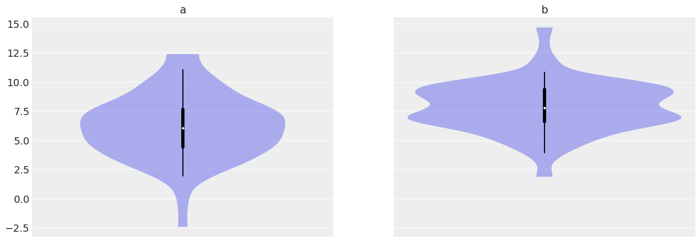
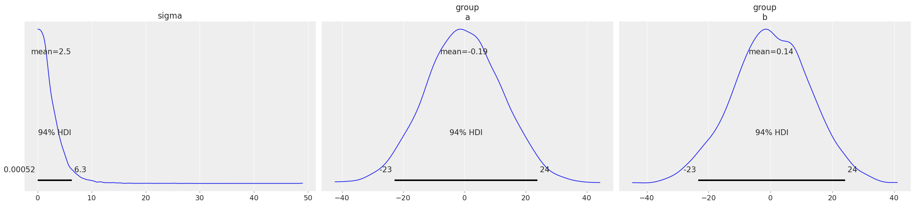
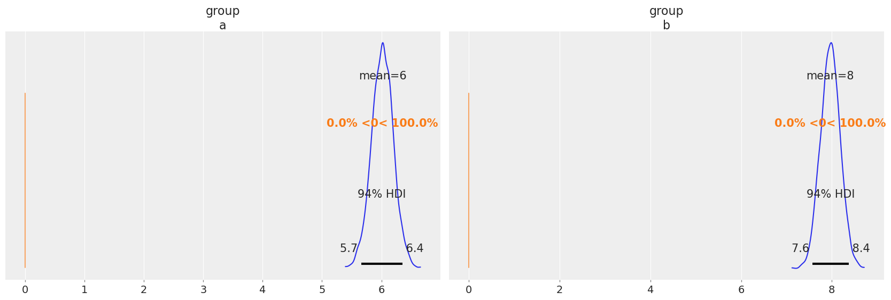

import arviz as az
import bambi as bmb
import numpy as np
import pandas as pdComparison of two means (T-test)
BROKEN EXAMPLE, NEEDS TO FIX SOMETHING WITHIN BAMBI
az.style.use("arviz-darkgrid")In this notebook we demo two equivalent ways of performing a two-sample Bayesian t-test to compare the mean value of two Gaussian populations using Bambi.
Generate data
We generate 160 values from a Gaussian with \(\mu=6\) and \(\sigma=2.5\) and another 120 values from a Gaussian’ with \(\mu=8\) and \(\sigma=2\)
a = np.random.normal(6, 2.5, 160)
b = np.random.normal(8, 2, 120)
df = pd.DataFrame({"group": ["a"] * 160 + ["b"] * 120, "value": np.concatenate([a, b])})df| group | value | |
|---|---|---|
| 0 | a | 9.811423 |
| 1 | a | 9.007781 |
| 2 | a | 5.128706 |
| 3 | a | 0.797659 |
| 4 | a | 10.317548 |
| ... | ... | ... |
| 275 | b | 9.832355 |
| 276 | b | 7.679154 |
| 277 | b | 9.520645 |
| 278 | b | 5.486694 |
| 279 | b | 4.601657 |
280 rows × 2 columns
df.head()| group | value | |
|---|---|---|
| 0 | a | 9.811423 |
| 1 | a | 9.007781 |
| 2 | a | 5.128706 |
| 3 | a | 0.797659 |
| 4 | a | 10.317548 |
az.plot_violin({"a": a, "b": b});/home/tomas/oss/bambinos/bambi/.pixi/envs/dev/lib/python3.13/site-packages/arviz/plots/backends/matplotlib/violinplot.py:65: UserWarning: This figure was using a layout engine that is incompatible with subplots_adjust and/or tight_layout; not calling subplots_adjust.
fig.subplots_adjust(wspace=0)
When we carry out a two sample t-test we are implicitly using a linear model that can be specified in different ways. One of these approaches is the following:
Model 1
\[ \mu_i = \beta_0 + \beta_1 (i) + \epsilon_i \]
where \(i = 0\) represents the population 1, \(i = 1\) the population 2 and \(\epsilon_i\) is a random error with mean 0. If we replace the indicator variables for the two groups we have
\[ \mu_0 = \beta_0 + \epsilon_i \]
and
\[ \mu_1 = \beta_0 + \beta_1 + \epsilon_i \]
if \(\mu_0 = \mu_1\) then
\[ \beta_0 + \epsilon_i = \beta_0 + \beta_1 + \epsilon_i\\ \] \[ \beta_1 = 0 \]
Thus, we can see that testing whether the mean of the two populations are equal is equivalent to testing whether \(\beta_1\) is 0.
Analysis
We start by instantiating our model and specifying the model previously described.
model_1 = bmb.Model("value ~ 1 + group", df)
#results_1 = model_1.fit(inference_method="numpyro")model_1.build()We’ve only specified the formula for the model and Bambi automatically selected priors distributions and values for their parameters. We can inspect both the setup and the priors as following:
model_1 Formula: value ~ 0 + group
Family: gaussian
Link: mu = identity
Observations: 280
Priors:
target = mu
Common-level effects
group ~ Normal(mu: [0. 0.], sigma: [12.471 12.471])
Auxiliary parameters
sigma ~ HalfStudentT(nu: 4.0, sigma: 2.4686)
------
* To see a plot of the priors call the .plot_priors() method.
* To see a summary or plot of the posterior pass the object returned by .fit() to az.summary() or az.plot_trace()model_1.plot_priors();Sampling: [group, sigma]
To inspect our posterior and the sampling process we can call az.plot_trace(). The option kind='rank_vlines' gives us a variant of the rank plot that uses lines and dots and helps us to inspect the stationarity of the chains. Since there is no clear pattern or serious deviations from the horizontal lines, we can conclude the chains are stationary.
az.plot_trace(results_1, kind="rank_vlines");
az.summary(results_1)| mean | sd | hdi_3% | hdi_97% | mcse_mean | mcse_sd | ess_bulk | ess_tail | r_hat | |
|---|---|---|---|---|---|---|---|---|---|
| group[a] | 6.018 | 0.182 | 5.658 | 6.352 | 0.003 | 0.003 | 3129.0 | 2850.0 | 1.0 |
| group[b] | 7.966 | 0.214 | 7.576 | 8.376 | 0.004 | 0.003 | 3506.0 | 2863.0 | 1.0 |
| sigma | 2.287 | 0.100 | 2.102 | 2.474 | 0.002 | 0.002 | 3869.0 | 2757.0 | 1.0 |
In the summary table we can see the 94% highest density interval for \(\beta_1\) ranges from 1.511 to 2.499. Thus, according to the data and the model used, we conclude the difference between the two population means is somewhere between 1.2 and 2.2 and hence we support the hypotehsis that \(\beta_1 \ne 0\).
Similar conclusions can be made with the density estimate for the posterior distribution of \(\beta_1\). As seen in the table, most of the probability for the difference in the mean roughly ranges from 1.2 to 2.2.
az.plot_posterior(results_1, var_names="group", ref_val=0);
Another way to arrive to a similar conclusion is by calculating the probability that the parameter \(\beta_1 > 0\). This probability is equal to 1, telling us that the mean of the two populations are different.
# Probabiliy that posterior is > 0
(results_1.posterior["group"] > 0).mean().item()1.0The linear model implicit in the t-test can also be specified without an intercept term, such is the case of Model 2.
Model 2
When we carry out a two sample t-test we’re implicitly using the following model:
\[ \mu_i = \beta_i + \epsilon_i \]
where \(i = 0\) represents the population 1, \(i = 1\) the population 2 and \(\epsilon\) is a random error with mean 0. If we replace the indicator variables for the two groups we have
\[ \mu_0 = \beta_0 + \epsilon \]
and
\[ \mu_1 = \beta_1 + \epsilon \]
if \(\mu_0 = \mu_1\) then
\[ \beta_0 + \epsilon = \beta_1 + \epsilon\\ \]
Thus, we can see that testing whether the mean of the two populations are equal is equivalent to testing whether \(\beta_0 = \beta_1\).
Analysis
We start by instantiating our model and specifying the model previously described. In this model we will bypass the intercept that Bambi adds by default by setting it to zero, even though setting to -1 has the same effect.
model_2 = bmb.Model("Val ~ 0 + Group", df)
results_2 = model_2.fit() We’ve only specified the formula for the model and Bambi automatically selected priors distributions and values for their parameters. We can inspect both the setup and the priors as following:
model_2model_2.plot_priors();To inspect our posterior and the sampling process we can call az.plot_trace(). The option kind='rank_vlines' gives us a variant of the rank plot that uses lines and dots and helps us to inspect the stationarity of the chains. Since there is no clear pattern or serious deviations from the horizontal lines, we can conclude the chains are stationary.
az.plot_trace(results_2, kind="rank_vlines");az.summary(results_2)In this summary we can observe the estimated distribution of means for each population. A simple way to compare them is subtracting one to the other. In the next plot we can se that the entirety of the distribution of differences is higher than zero and that the mean of population 2 is higher than the mean of population 1 by a mean of 2.
post_group = results_2.posterior["Group"]
diff = post_group.sel(Group_dim="b") - post_group.sel(Group_dim="a")
az.plot_posterior(diff, ref_val=0);Another way to arrive to a similar conclusion is by calculating the probability that the parameter \(\beta_1 - \beta_0 > 0\). This probability equals to 1, telling us that the mean of the two populations are different.
# Probabiliy that posterior is > 0
(post_group > 0).mean().item()%load_ext watermark
%watermark -n -u -v -iv -w